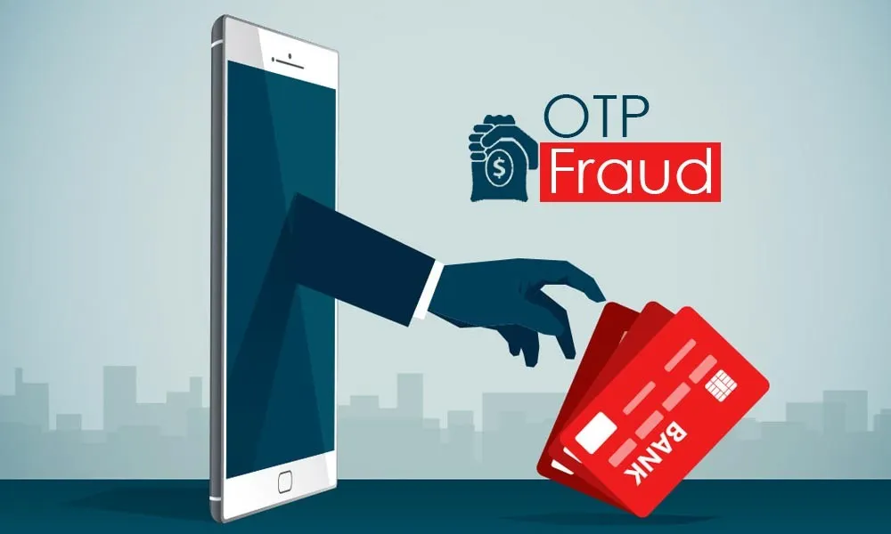
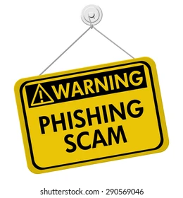

OTP Scam:-
UPI Frauds:-
Phishing Links:-
Phishing links are fake links sent through SMS, email, or social media that try to trick people into entering their personal information such as bank details, passwords, or OTPFake Apps:-

Scammers pretend to be bank officials and ask for OTP.

Stay Safe from Phishing.